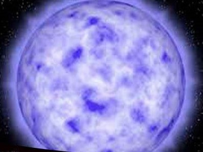

| NO. | CARACTERISTICAS |
|---|
| 1 | TEMPERATURA SUPERFICIAL: Las estrellas de tipo O tienen temperaturas superficiales que oscilan entre aproximadamente 30,000 y 50,000 Kelvin, o incluso más. |  |
| 2 | ESPECTRO:Su espectro está dominado por líneas de absorción de helio ionizado (He II) y helio neutro (He I).También presentan líneas de otros elementos ionizados como el oxígeno (O III), el nitrógeno (N III) y el carbono (C III y C IV).Las líneas de hidrógeno (líneas de Balmer) son visibles pero menos prominentes que en las estrellas de tipo A y B. |
| 3 | COLOR:Son de color azul o azul-blanco debido a su alta temperatura. |
| 4 | BRILLO:Son extremadamente luminosas, con una luminosidad que puede ser cientos de miles a millones de veces la del Sol. Su magnitud absoluta varía, pero son algunas de las estrellas más brillantes conocidas. |
| 5 | EJEMPLOS NOTABLES:Zeta Puppis (O4If) en la constelación de Puppis.
Delta Orionis (Mintaka, O9.5II) en la constelación de Orión.
Naos (Zeta Puppis, O5Ia) también en la constelación de Puppis.
|
| 6 | CICLO DE VIDA:Las estrellas de tipo O tienen vidas muy cortas, típicamente de solo unos pocos millones de años, debido a su alta masa y rápida tasa de fusión nuclear.
A menudo terminan su vida en explosiones de supernova, dejando remanentes como estrellas de neutrones o agujeros negros. |